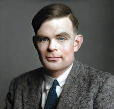

En este documento contaremos la historia extraordinaria de una de las grandes mentes
considerado unos de los padres de la ciencia de la computación y de la informática moderna
Alan Turing quien fue un matemático, lógico e informático y dejo huella a sus maravillosos
inventos a la tecnología artificial.
En el presente trabajo veremos la forma en que Alan Turing aporta a la segunda guerra mundial,
siendo pionero de la inteligencia artificial, Alan Turing fue el creador de la máquina
descifradora de códigos que los alemanes utilizaban para atacar las ciudades de Europa, y con 
esta máquina poder finalizar con la segunda guerra mundial, fue un trabajo que le costó muchos
años, pero algo por lo que se destacó es que siempre creyó en él y en que lo podía lograr.
En la historia hay personas que destacan por su intelecto y sus grandes aportes a la ciencia. Alan
Turing es uno de ellos debido a los descubrimientos realizados, que hicieron avanzar la
tecnología varios pasos.
Su campo principal fue la matemática, pero también aportó desde el campo de la psicología,
filosofía, física, química y biología.
Está considerado uno de los padres de la ciencia de la computación y precursor de
la informática moderna. Proporcionó una influyente formalización de los conceptos
de algoritmo y computación: la máquina de Turing. Formuló su propia versión que hoy es
ampliamente aceptada como la tesis de Church-Turing (1936) Este matemático, criptógrafo y
filósofo, considerado uno de, los padres de la ciencia de la computación.
Alan Mathison Turing (Paddington, Londres; 23 de junio de 1912-Wilmslow, Cheshire; 7 de
junio de 1954) fue un Matemático, Lógico , informático teórico, criptógrafo, filósofo y biólogo
teórico Británico
El Premio Turing es un premio de las Ciencias de la Computación que es otorgado anualmente
por la Asociación para la Maquinaria Computacional (ACM) a quienes hayan contribuido de
manera trascendental al campo de las ciencias computacionales.
El galardón rinde homenaje a Alan Turing y desde 2014 es patrocinado
por Google, que recompensa con un premio de 1 000 000 de dólares
estadounidenses al ganador.
En 1966 se creó un premio de ciencias computacionales en su honor,
el Premio Alan Turing, equivalente al Nobel en esa rama de estudio.
En la ciudad de Manchester se puede encontrar una estatua de
Turing; había perdido su puesto de trabajo en aquella universidad tras ser
acusado por el gobierno.
En 2017 se publicó Más que un enigma, la biografía que su madre, Sara Stoney Turing, escribió
poco tiempo después del fallecimiento de Turing, sobre su infancia y juventud.
.jpg) 21190226 PAGINAS WEB
21190226 PAGINAS WEB